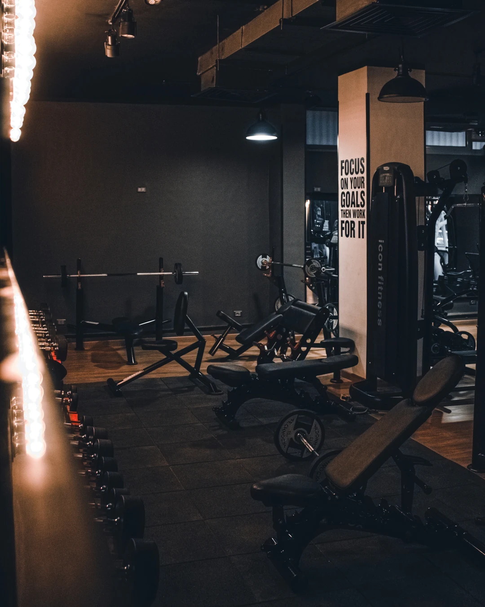
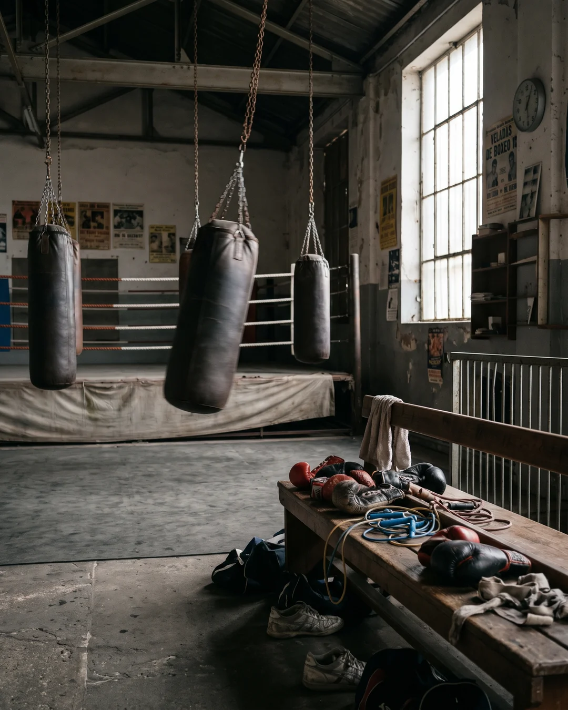
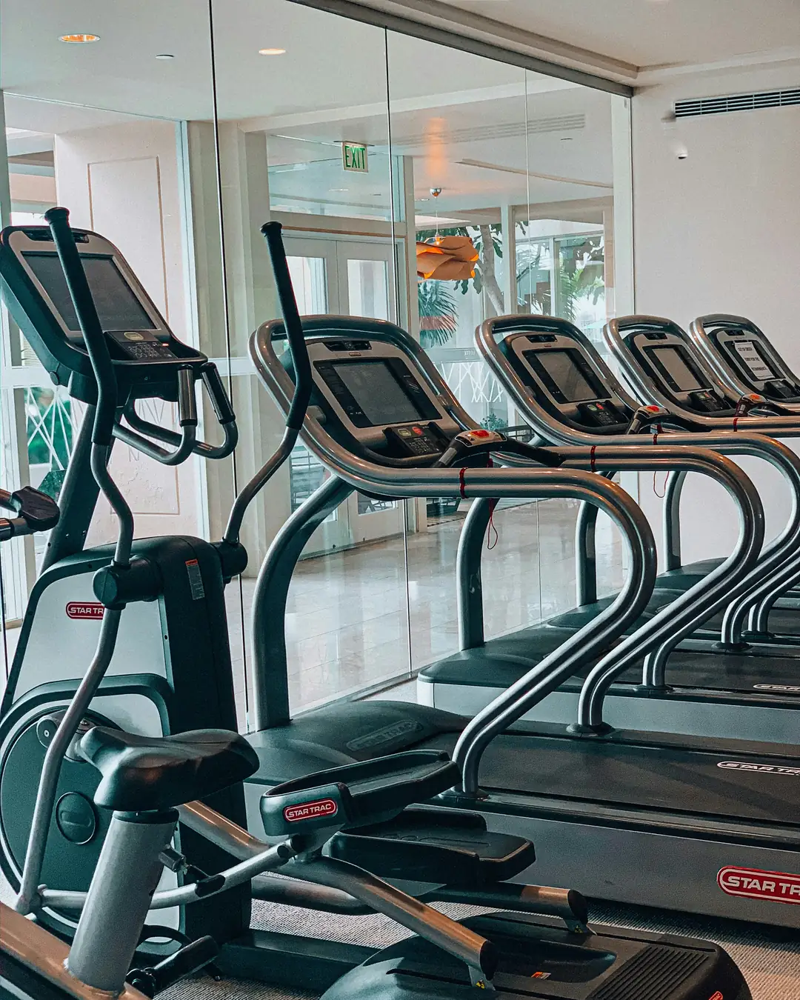
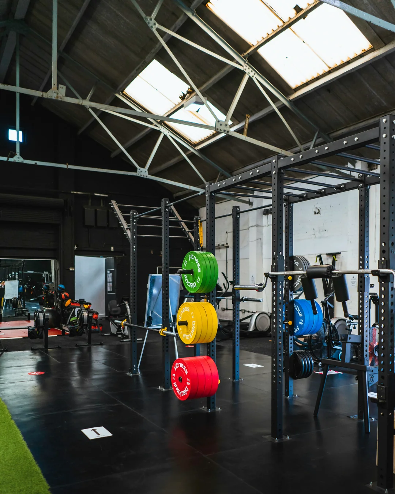

Caso n.º 26 · Gimnasios
Sobre este caso
El caso n.º 26 está cerrado. Fue el caso diario del 26 de noviembre de 2026 y su tema fue Gimnasios. Los detectives de aquel día tuvieron dos retos: cinco imágenes que clasificar en fotografías reales y generadas por IA, y cinco afirmaciones de una frase que clasificar en datos y bulos.
- Imágenes generadas por IA: 1 de 5
- Bulos: 1 de 5
Aquí tienes todas las respuestas. Cada imagen generada por IA trae el prompt que la creó, y cada afirmación, la verdad que hay detrás y los detalles que merece la pena recordar, para que compruebes qué se te escapó.
Uno de los bulos: «Si dejas de entrenarlo, el músculo se puede llegar a convertir en grasa.» La verdad: Músculo y grasa son tejidos totalmente distintos; el músculo sin uso se encoge (se atrofia) y encima se acumula una nueva capa de grasa.
¿Quieres afinar la vista? Lee nuestra guía para detectar imágenes de IA o nuestra guía para detectar un bulo y luego juega el caso de hoy.
Imágenes
-
Imagen 1
REAL
Fotografía real
-
Imagen 2

REAL
Fotografía real
-
Imagen 3

IA
La confesión del sospechoso
Un gimnasio de boxeo con sacos colgados del techo, uno de ellos balanceándose, guantes y cuerdas de saltar tiradas en un banco y una ventana alta con luz entrando de lado; colores apagados.
-
Imagen 4

REAL
Fotografía real
-
Imagen 5

REAL
Fotografía real
¿Dato o Bulo?
-
Afirmación 1
DATO «La NASA desarrolló una máquina para que los tripulantes de la Estación Espacial Internacional hagan sentadillas y peso muerto en el espacio.»
El ARED usa cilindros de vacío y pistones para dar una resistencia constante, que simula hasta 270 kg de peso.
- Ayuda a evitar la pérdida de hueso y músculo en microgravedad.
-
Afirmación 2
DATO «El término «gimnasio» proviene de la palabra griega gymnos, que significa literalmente «desnudo».»
En la Antigua Grecia, gymnasion derivaba de gymnos porque los atletas entrenaban y competían en los Juegos Olímpicos sin ropa.
- Cubrían su cuerpo únicamente con aceite de oliva.
-
Afirmación 3
DATO «Una cadena de gimnasios de EE. UU. hace sonar una «Lunk Alarm» si alguien gime muy fuerte o tira las pesas, y puede invitarle a irse.»
Planet Fitness promueve una «zona sin juicios» y hace sonar una estridente sirena para avergonzar a quien gruñe, lanza las pesas o intimida a otros.
- Al infractor se le puede expulsar del local.
-
Afirmación 4
BULO «Si dejas de entrenarlo, el músculo se puede llegar a convertir en grasa.»
Músculo y grasa son tejidos totalmente distintos; el músculo sin uso se encoge (se atrofia) y encima se acumula una nueva capa de grasa.
-
Afirmación 5
DATO «Hay gimnasios ecológicos con bicicletas y elípticas que convierten el pedaleo en electricidad para iluminar las salas.»
Ciertas máquinas cardiovasculares, como las de SportsArt, usan microinversores que convierten el esfuerzo en electricidad para luces, aire y pantallas.